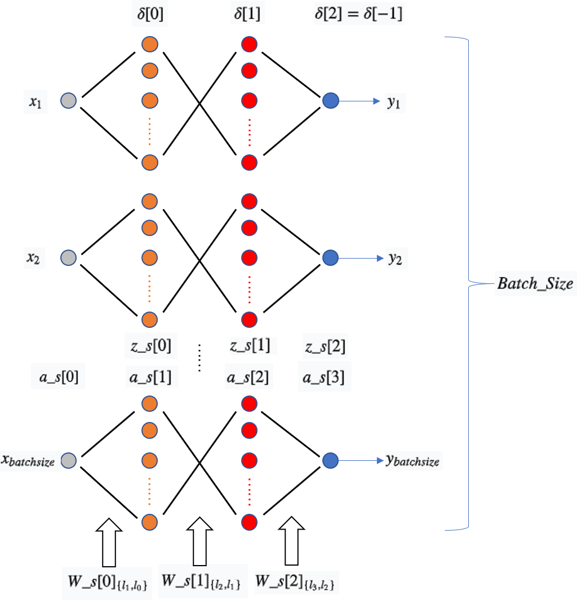

从零开始写NN（上）
从零开始写NN (neural network) 系列第一篇，本篇博文将会从代码结构上介绍一下怎么写一个简单的
神经网络算法，下篇打算使用一个示例介绍一下如何调整参数细节。当然，这里的所谓从0开始，其实还是使用了numpy，有点像使用matlab的感觉。
明确目标
上一篇结尾的地方给了一个实现Back Propagation算法的代码，既然反向传播都写成了博客，那干脆把整个神经网络算法也给介绍介绍好了。接下来我将分析一下上篇结尾给出的算法代码。
了解了BP后，要实现一个简单的神经网络就不难了，这里的代码相比简单的算法实现做了一点点延伸：$tag$
- 网络的深度、每一层的神经元个数都是可变的参数
- 激活函数提供多个选择
- 可以定义一个
batch的大小，每计算一次batch更新一次权重 - 可以定义
epoch的次数，每个epoch内的数据在进行训练前需要被打散 - 使用矩阵运算来并行化以提高效率
算法设计
算法基本思路：给定一个batch，里面包括一组sample，对于每个sample x都会计算一次正传的值，保存每个神经元的值为反向传播计算所用；再进行反向计算得到w和b的梯度，之后使用梯度对模型参数也即w和b进行更新，每次迭代都会使用一组新的batch。当所有的sample都进行计算后，再将所有的sample顺序打乱，循环上面的过程。
其中，每一个batch都会使用矩阵运算，这样可以使用并行算法，这也是前馈神经网络要比循环/递归神经网络训练快的一个主要原因；公式表达如下：
下面是算法图解，从上往下看，每一个神经网络表示对每一个sample的计算，一共有batch_size个，图中表示反向传播过程中神经元上的值（误差累计），上篇博文中式（5）；表示正向计算神经元上的加权和（仿射值）； 表示正向计算神经元上的激活值；W_s[i]表示两层之间的权重矩阵。

所以算法步骤如下：
步骤1： 给定epoch次数，batch_size大小，学习率；输入数据，初始化权重参数；
步骤2： 设置两层循环，1. 第一层循环：epoch迭代次数；2. 打乱epoch内数据顺序；3. 第二层循环，一个epoch按照下标顺序被分为多个batch，每个batch的大小相同；
步骤3： 调用正向计算函数，得到神经元上的激活值和加权和（仿射计算值）；
步骤4： 调用反向计算函数，得到一个batch内每一个权重的更新梯度的平均值；
步骤5： 使用学习率/步长参数对权重参数进行更新，得到更新后的权重参数；
步骤6： 回到步骤3进行循环，batch循环结束后回到步骤2，进行epoch循环
正向传播函数
首先，需要写一个正向计算的函数，当input一个数组x时，函数将对x进行正向传播，使用权重参数W，逐层计算每一层神经元的激活函数值，最后输出y值，也即a_s[-1]。
每一个神经元的线性加权值z_s，激活值a_s以及权重参数W都需要被保存：
z_s保存为矩阵形式，整体是个list，list的每一个元素都是一个layer[i]*batch_size的矩阵，其中layer[i]表示第i层网络神经元的个数，需要注意的是我们不需要保存input层（layer[0]）的z_s；
a_s保存为矩阵形式，整体是个list，list的每一个元素都是一个layer[i]*batch_size的矩阵，其中layer[i]表示第i层网络神经元的个数，需要注意的是我们需要保存input层的a_s，并且定义a_s[0]的值就是input数据x。
W会在一个batch内的多个sample计算中被复用，保存为矩阵，整体是一个和z_s维度相同的list，W[i]是一个维度为layer[i+1]*layer[i]的矩阵。
如图所示，对于input层来说，W_s[0]为layer[1]*layer[0]的二维数组，a为layer[0]*bathc_size的数组，两变量做矩阵相乘得到的是layer[1]*bathc_size的二维数组。
代码：1
2
3
4
5
6
7
8
9
10
11def feedforward(self, x): # 正向计算
#x 在train函数里为x_batch，x，y是一个矩阵：相当于对多笔数据进行并行计算
a = np.copy(x)
z_s = []
a_s = [a]
for i in range(len(self.weights)):
activation_function = self.getActivationFunction(self.activations[i])
z_s.append(self.weights[i].dot(a) + self.biases[i])
a = activation_function(z_s[-1])
a_s.append(a)
return (z_s, a_s)
矩阵相乘在数值计算上可以做很多优化，这点
matlab最擅长了；使用GPU并行计算也可。
反向传播函数
如图所示，将正传得到的结果和的距离做一个度量，也就是设计一个loss函数，这里简单将loss设置为二范数的形式；这样一来，(y-a_s[-1])就是梯度，接着让(y-a_s[-1])乘以，得到传播的初始值；再使沿着反方向逐层计算，神经元上的值并保存在内就好了；由公式 可知，需要计算到第一层隐含层；最后将正向计算的a_s[i]和delta[i]做矩阵相乘就得到了每一个W的梯度，注意计算时一个batch内的W需要计算均值。
正向计算已经保存了z_s, a_s以及W；反向传播涉及的变量有delta dw db：
delta在函数内保存为和w维度相同的list，为layer[i]*batch_size 的矩阵，和z_s[i]进行element-wise的相乘。
需要注意的是，正向传播的时候用的是
w[i].dot(a)，反向传播时则使用w[i].T.dot(delta[i])，这在数学上很好理解，把矩阵写成线性方程组就一目了然了。
dw[i] 在函数中必须要保存为和w的形式一模一样，如上篇博文的图3所示，delta[i]和a_s[i]相乘；如下图所示，delta[i]中的每一个列向量第i个元素组成一个向量分别和a_s[i]中的每一个列向量第i个元素组成的向量做内积，得到的便是求和之后的权重矩阵，最后整体除以batch_size得到dw[i]矩阵。
如图所示，这里的
delta[i]和a_s[i]相乘部分也是可以用矩阵计算来完成的，把a_s矩阵转置一下就可以相乘了。
db[i]在求dw中乘以a_s[i]改为乘以1就行了，参考上篇博客的公式推导。
代码1
2
3
4
5
6
7
8
9
10
11
12
13
14
15def backpropagation(self,y, z_s, a_s): # 反向计算
dw = [] # dl/dW
db = [] # dl/dB
deltas = [None] * len(self.weights) # 存放每一层的error
# deltas[-1] = sigmoid'(z)*[partial l/partial y]
# 这里y是标注数据，a_s[-1]是最后一层的输出，差值就是二范数loss的求导
deltas[-1] =(y-a_s[-1])*(self.getDerivitiveActivationFunction(self.activations[-1]))(z_s[-1])
# Perform BackPropagation
for i in reversed(range(len(deltas)-1)):
deltas[i] = self.weights[i+1].T.dot(deltas[i+1])*(self.getDerivitiveActivationFunction(self.activations[i])(z_s[i]))
batch_size = y.shape[1]
db = [d.dot(np.ones((batch_size,1)))/float(batch_size) for d in deltas]
dw = [d.dot(a_s[i].T)/float(batch_size) for i,d in enumerate(deltas)]
# return the derivitives respect to weight matrix and biases
return dw, db
训练函数
train函数就是将整个计算流程表达出来，输入数据(x,y)，batch_size epoch以及步长/学习率lr；按照算法设计部分的步骤，调用正向计算和反向计算函数就可以更新权重参数了。
代码1
2
3
4
5
6
7
8
9
10
11
12
13
14
15
16
17
18
19
20
21
22
23
24
25
26
27def train(self, x, y, batch_size, epochs, lr):
# update weights and biases based on the output
for e in range(epochs):
'''
# 使用下标来打乱数据,有点麻烦
x_num = x.shape[0]
index = np.arange(x_num) # 生成下标
np.random.shuffle(index)
i = index[0]
'''
# 直接打乱源数据
nn=np.random.randint(1,1000)
np.random.seed(nn)
np.random.shuffle(x)
np.random.seed(nn)
np.random.shuffle(y)
i = 0
while(i<len(y)):
x_batch = x[i:i+batch_size].reshape(1, -1) # 转换成矩阵更加清晰明了
y_batch = y[i:i+batch_size].reshape(1, -1)
i = i+batch_size
z_s, a_s = self.feedforward(x_batch)
dw, db = self.backpropagation(y_batch, z_s, a_s)
# 一个batch更新一次参数
self.weights = [w+lr*dweight for w,dweight in zip(self.weights, dw)]
self.biases = [w+lr*dbias for w,dbias in zip(self.biases, db)]
print("loss = {}".format(np.linalg.norm(a_s[-1]-y_batch) ))
总结
基本上是把NN的代码很细致的介绍了一遍，阐述的有点啰嗦了。
Reference
- Werbos, P. (1974). Beyond Regression:” New Tools for Prediction and Analysis in the Behavioral Sciences. Ph. D. dissertation, Harvard University.
- 代码参考原文
- 反向传播算法 (BP)